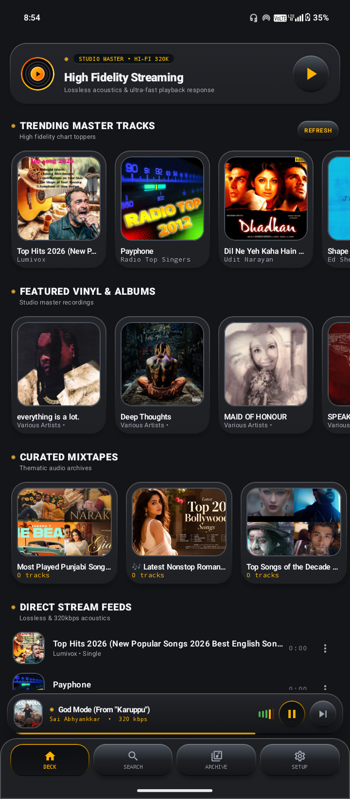
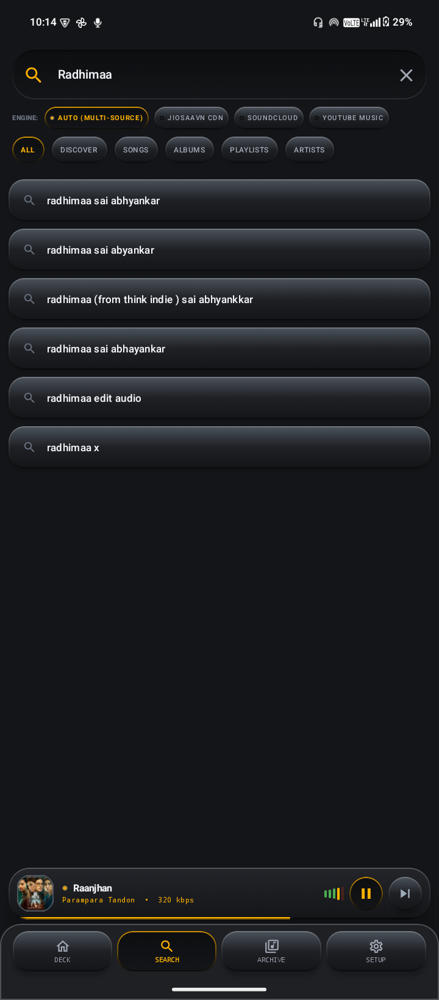
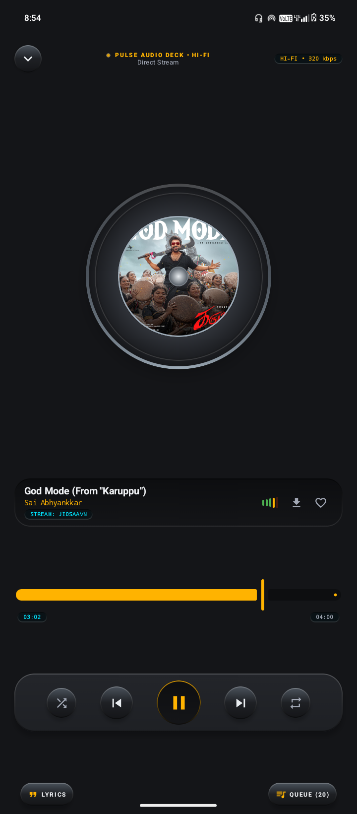
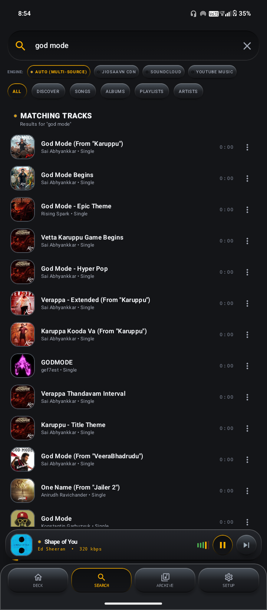

Music
beyond silence.
A powerful, open source 3rd party streaming app built for people who care about the way music feels, sounds, and moves.
BUILT LIKE AN INSTRUMENT.
Pulse Music combines modern streaming technology with the character of classic Hi-Fi equipment.




MULTIPLE SOURCES.
Search, stream, and discover music across multiple provider integrations seamlessly within one unified interface.
YouTube Music
Comprehensive YouTube Music catalog, charts, & radio mixes
JioSaavn
High-fidelity 320 kbps direct audio streams & global discography
SoundCloud
Direct progressive streams for EDM, indie, and creator mixes
Auto (Multi-Source)
Intelligent routing across all sources with automatic failover
Starlight
Silver Sky • Lo-Fi Beats
UNDER YOUR CONTROL.
Background Playback
Keep the music going uninterrupted while you use other apps or lock your device.
Queue Management
Easily reorder, remove, or add songs to your current listening session.
Shuffle & Repeat
Control the flow of your music with standard playback controls and intelligent autoplay.
YOUR WAY.
Pulse Music maintains a persistent local library, keeping your saved music, playlists, and downloads ready whenever you need them.
Favorites
Your saved tracks
LOCAL CACHE AVAILABLEPlaylists
Your custom playlists
SYNCEDOffline
Your downloaded music
OFFLINE MODE READYFEEL IT.
In the middle of the quiet night...
I found a light, a reason to fight,
Every waveform pulsing pure and true,
Music beyond silence, just me and you.
Analog soul in an uncompromising groove.
● INTERACTIVE TELEPROMPTER • CLICK ANY LINE TO SYNC
Pulse JAM (Live Sync)
Create and join real-time music rooms. Everyone listens to the exact same track perfectly synced together.
Time-Synced Lyrics
Beautiful Neumorphic animated lyrics injected into the player UI, automatically syncing and scrolling with the track.
NewPipe Extractor
Powered by the stable NewPipe engine for resilient, ad-free background playback directly from YouTube Music.
Dynamic Feed
Infinite generated Home screen with randomized Quick Picks, Trending Tracks, and curated Moods & Genres.
Media controls
Control playback via Android media controls and notifications.
Offline downloads
Keep supported music available locally for offline listening.
Autoplay
Continue listening to similar tracks when the queue ends.
Playlists
Organize your personal library with custom created playlists.
Audio controls
Shuffle, repeat, seeking, crossfade, and essential playback controls.
Seamless Updates
In-app auto updater seamlessly fetches and installs the latest releases from GitHub.
Dynamic Engine
Built with Jetpack Compose & Media3 for a resilient and robust architecture.
ANALOG SOUL.
SMPL: 44.1kHz 16bit
BUILT FOR REAL PLAYBACK.
THE DEVELOPER
Meet the creator behind Pulse Music.

PURE OFFLINE & LIVE DOWNLOAD QUEUE
Introducing Pure Offline Mode and Instant Download Tracking in Pulse Music v2.7.1. No online search or streaming requests while offline mode is active, real-time byte-streaming download progress, 1-tap full playlist/album downloads, and collaborative Pulse JAM sync listening.
Features seamless mid-song seek carryover, synchronized playback handoffs, WakeLock background reliability, and language-affinity radio recommendations.
FREQUENTLY ASKED QUESTIONS
Everything you need to know about Pulse Music, audio sources, offline mode, and privacy.
Yes, 100%. The Pulse Music Android app is open source under GPL-3.0, and this website is open source under GPL-3.0. There are zero subscriptions, zero third-party advertisements, and no paywalled features.
No Google, YouTube, or Spotify account is required. Core playback and your local library work without sign-up. Pulse JAM rooms use Firebase Realtime Database and may use Firebase anonymous authentication to identify a room participant.
Pure Offline Mode turns off online search and streaming and limits playback to locally cached tracks and downloaded albums in Room SQLite. It is not a network kill switch: the app may still perform update checks or fetch remote configuration and kill-switch data unless you disable those features or use Android's network controls.
Pulse JAM lets you host or join live listening rooms. It uses Firebase Realtime Database with buffer-aware drift correction (<150ms auto-seek) so the host and listeners hear the same song timestamp. Guests can vote-skip with a 50% consensus. Room state is stored in Firebase while the room exists and may persist until the host ends or cleans up the room.
Pulse Music aggregates YouTube Music (Opus audio via ytm-kt), JioSaavn (up to 320 kbps), and SoundCloud (progressive streams) through unofficial provider integrations. Auto mode routes to the highest-fidelity available source with seed-provider stickiness; availability can change when providers update their services.
Pulse Music has an integrated update checker (AppUpdater.kt) that periodically queries the GitHub Releases API. When a newer version (for example, v2.7.1) is published, you get a 1-tap download prompt. Android's package installer then asks you to confirm installation; your offline downloads and playlists are retained.
READY TO PRESS PLAY?
Take your music with you. Build your library. Listen your way.
Instant Mobile Install
Scan with your Android phone to download the latest Pulse Music APK directly from GitHub Releases.